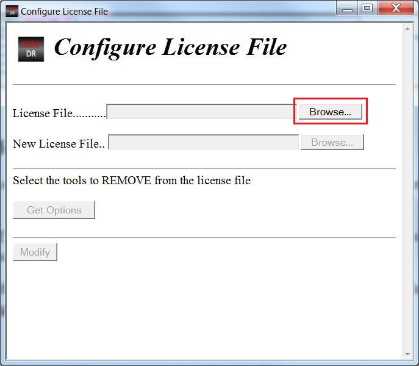
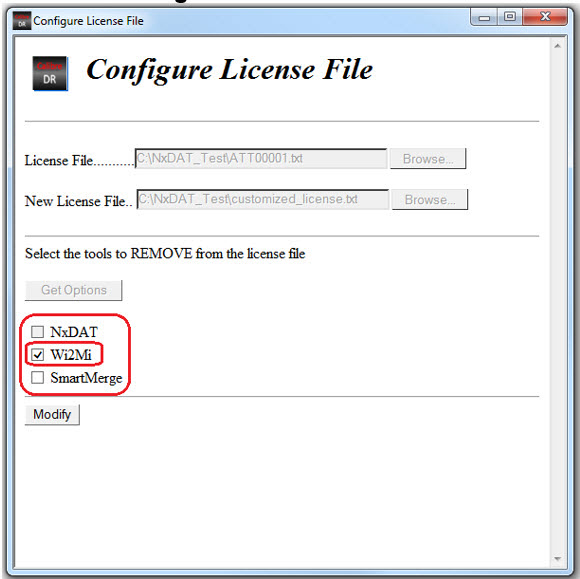

You can customize the license file on Windows
hosts to restrict usage of certain Calibre DefectReview sub-tools
by removing corresponding license features from the license file.
Procedure
- Double-click <install_path>/DefectAnalysisTool/bin/configure-license-file.hta.
This invokes the Configure License File dialog box.
Figure 1. Configure
License File
- Click the Browse button
next to the License File field to locate your original license file. Once
the license file is selected, a second Browse button is enabled
next to the New License File field
- Create
an empty text file to save as the new customized license. For example,
you can create a file named customize_license.txt for
the new license.
- Click the Browse button
next to the New License File field to locate the new custom license
file. Once the file is selected, the Get Options button
is enabled.
- Click the Get
Options button to validate the original license file
and check for available sub-tools. If the original license file
is corrupted or invalid, then Calibre DefectReview displays an “Invalid
License File” error message.
- After validation, Calibre DefectReview displays
a list of sub-tools you can opt to activate or deactivate for the
new license file.
Figure 2. Sub-tools
Listed in License File
Select the sub-tools that you want to remove from the license
file and click the Modify button. This populates
the new license file with the tools that were not checked.
- After the
license file is created, Calibre DefectReview displays a dialog
box indicating that the customization was successful. There is no
option to remove the license for Calibre DefectReview.